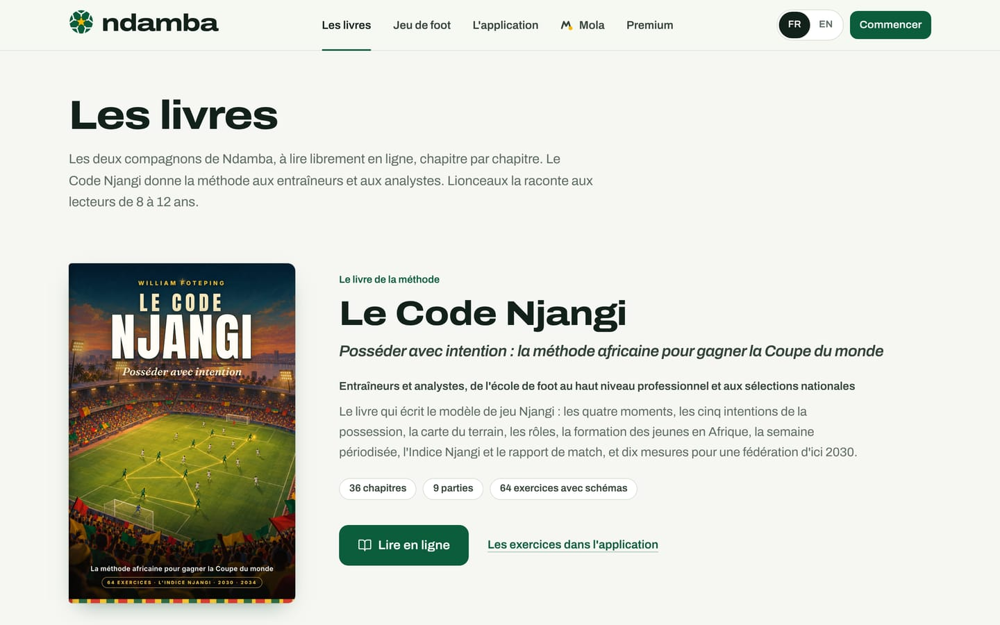
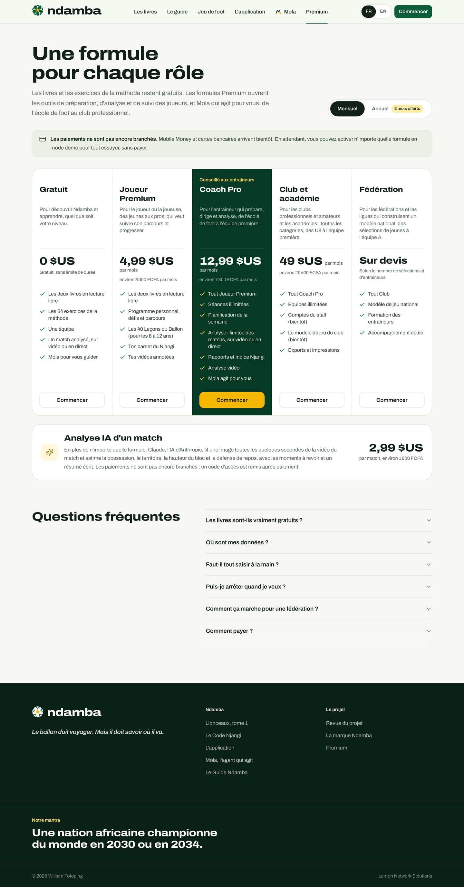
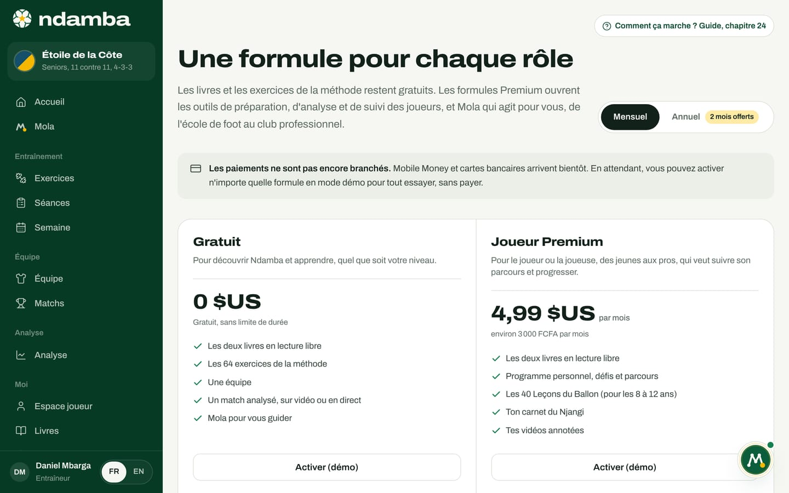
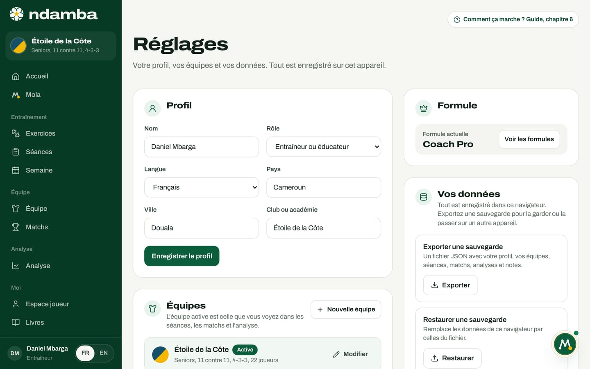

Le modèle économique
Les cinq formules et leurs prix, l’analyse IA payée au match, qui paie et pourquoi, la règle qui garde l’éducation gratuite, les deux limites de la formule gratuite, l’état réel des paiements, les coûts de fonctionnement et des scénarios de revenus présentés comme des hypothèses.
13 min de lecture
Un modèle économique dit qui paie, pour quoi, et ce que cela coûte. Celui de Ndamba part d’une conviction de la méthode : on ne construit pas un football commun en faisant payer l’accès au savoir. Les livres et les exercices sont donc gratuits pour tous. Ce qui se paie, ce sont les outils qui font gagner du temps et qui mesurent : préparer, analyser, suivre les joueurs, et Mola qui agit. Ce chapitre présente les cinq formules telles que la page Premium les affiche, ce qui est réellement appliqué dans l’application aujourd’hui et ce qui ne l’est pas encore. Il se termine par des scénarios chiffrés qui sont des hypothèses de calcul, pas des prévisions.
La règle de départ : l’éducation reste gratuite
Dans le fichier de configuration de l’application, la règle est écrite noir sur blanc : les livres et la bibliothèque d’exercices ne sont jamais derrière un paiement. Quelle que soit la formule :
- Le Code Njangi (36 chapitres en neuf parties) et Lionceaux, tome 1 : Le Ballon qui voyage (40 chapitres) se lisent librement en ligne ;
- les 64 exercices de la méthode, avec leurs animations et leurs consignes, restent ouverts dans Exercices ;
- les 40 Leçons du Ballon, tirées du roman, restent ouvertes aussi.
La page Premium le confirme dans ses questions fréquentes : « Les livres sont-ils vraiment gratuits ? Oui. » La raison est stratégique autant que morale. Un éducateur d’un club sans budget doit pouvoir apprendre la méthode. Plus les entraîneurs parlent la même langue, plus les outils qui la mesurent prennent de la valeur.


Les cinq formules et leurs prix
La page Premium s’appelle « Une formule pour chaque rôle ». Elle affiche les prix en dollars, avec un équivalent indicatif en FCFA, et un choix Mensuel ou Annuel. L’annuel correspond à dix mois payés : c’est le sens de l’étiquette « 2 mois offerts ».
| Formule | Par mois | Par an | Environ en FCFA par mois | Pour qui, selon la page |
|---|---|---|---|---|
| Gratuit | 0 $US | 0 $US | 0 | Pour découvrir Ndamba et apprendre, quel que soit votre niveau |
| Joueur Premium | 4,99 $US | 49,90 $US | 3 000 FCFA | Le joueur ou la joueuse, des jeunes aux pros |
| Coach Pro | 12,99 $US | 129,90 $US | 7 800 FCFA | L’entraîneur, de l’école de foot à l’équipe première |
| Club et académie | 49 $US | 490 $US | 29 400 FCFA | Clubs pros et amateurs, académies, des U8 à l’équipe première |
| Fédération | Sur devis | Sur devis | Fédérations et ligues, selon le nombre de sélections et d’entraîneurs |
Les montants en FCFA sont calculés par la page sur la base d’environ 600 FCFA pour 1 dollar, arrondis à la centaine ; la page précise qu’ils sont indicatifs. En annuel, la page affiche aussi l’équivalent mensuel : 4,16 $US pour Joueur Premium, 10,83 $US pour Coach Pro, 40,83 $US pour Club et académie. Coach Pro porte la mention « Conseillé aux entraîneurs ».
Chaque formule liste ce qu’elle ouvre :
| Formule | Ce que la page Premium annonce |
|---|---|
| Gratuit | Les deux livres en lecture libre, les 64 exercices, une équipe, un match analysé en direct, Mola pour vous guider |
| Joueur Premium | Les deux livres, le programme personnel, les défis et le parcours, les 40 Leçons du Ballon (pour les 8 à 12 ans), le carnet du Njangi, les vidéos annotées |
| Coach Pro | Tout Joueur Premium, séances illimitées, planification de la semaine, analyse en direct illimitée, rapports et Indice Njangi, analyse vidéo, Mola qui agit pour vous |
| Club et académie | Tout Coach Pro, équipes illimitées, comptes du staff (bientôt), le modèle de jeu du club (bientôt), exports et impressions |
| Fédération | Tout Club, modèle de jeu national, formation des entraîneurs, accompagnement dédié |
Sous les formules, une carte à part présente l’Analyse IA d’un match : « En plus de n’importe quelle formule », 2,99 $US par match, avec son équivalent en FCFA. Elle est décrite plus bas.


Qui paie, et pourquoi
Les joueurs, et souvent leurs parents. Joueur Premium s’adresse aux joueurs de tous âges. Pour un enfant de 8 à 12 ans, c’est une routine de quinze minutes par jour (les défis), les leçons du roman et un carnet. Pour un joueur plus âgé, c’est le parcours, la semaine du match et les vidéos annotées. Ce qu’on achète : une progression visible et une habitude.
Les entraîneurs. Coach Pro est la formule conseillée, et l’entraîneur est le moteur du modèle : c’est par lui que la méthode arrive aux joueurs. Ce qu’il achète, c’est du temps et une mesure : une semaine de séances construite autour du match, un match codé depuis le bord du terrain qui donne un rapport aussitôt, Mola qui prépare la convocation.
Les clubs et les académies. Club et académie couvre toutes les catégories et plusieurs équipes. Ce que le club achète, c’est la continuité en interne : le même modèle des U8 à l’équipe première, et un parcours qui suit le joueur d’une catégorie à l’autre.
Les fédérations et les ligues. La formule se fixe sur devis. La page Premium répond ainsi : « Le modèle de jeu national, la formation des entraîneurs et l’accompagnement se construisent ensemble. Le prix se fixe sur devis. » Ce qu’une fédération achète : une mesure commune pour toutes ses sélections, des entraîneurs formés, et des références par âge. C’est l’étape 3 du plan (chapitre 23).
Une précision s’impose pour un investisseur. Certaines lignes décrivent ce que la formule doit apporter, plus que ce que l’application fait aujourd’hui, et la page le signale pour deux d’entre elles par la mention « bientôt ». Les « Comptes du staff (bientôt) » supposent des comptes d’utilisateurs, qui sont prévus mais n’existent pas encore. « Le modèle de jeu du club (bientôt) » et le « Modèle de jeu national » sont aujourd’hui celui du Code Njangi, qui structure les exercices, les séances et l’Indice ; l’adapter à un club ou à une nation est un travail d’accompagnement, pas un écran. La formation des entraîneurs et l’accompagnement dédié sont des services rendus par des personnes.
La formule gratuite et ses deux limites
Dans le code d’aujourd’hui, la formule Gratuit a exactement deux limites, et elles valent partout dans l’application. Elles s’appliquent aussi à Joueur Premium : cette formule ouvre l’espace du joueur, pas les outils de l’entraîneur.
- Cinq séances. Au-delà, la page Séances et la fenêtre Nouvelle séance affichent « Vos 5 séances gratuites sont utilisées », avec le bouton Découvrir Coach Pro ; la page Semaine montre le même encadré et son bouton Planifier la semaine reste grisé. Les boutons Préparer la semaine de l’accueil et Planifier la semaine avec ces objectifs du rapport de match ouvrent alors la page Premium. Mola applique la même règle quand on lui demande une séance ou la semaine : « Votre plan gratuit compte déjà 5 séances. Pour que je continue à en préparer, passez à Coach Pro. Les livres et les 64 exercices restent ouverts à tous. »
- Un match analysé, sur vidéo ou en direct. La carte Gratuit dit « Un match analysé, sur vidéo ou en direct » : la règle compte tout match codé, quelle que soit la manière. Une fois un match codé, les autres ne peuvent plus l’être. La fiche de match affiche « L’analyse illimitée est dans Coach Pro » et le lien Voir les offres, et son bouton Ajouter la vidéo du match porte un cadenas ; la page Analyse remplace Ajouter la vidéo et le direct par Voir les offres, et la page du direct elle-même affiche ce message si on l’ouvre par son adresse. Un match qui a déjà des tags n’est jamais bloqué : vous pouvez toujours le relire et le corriger.
Le reste n’est pas limité aujourd’hui, même quand la page Premium le range dans une formule payante : le nombre d’équipes (la formule gratuite annonce « Une équipe »), les rapports, la vidéo, les leçons ou le carnet. La page décrit l’offre prévue ; le code n’applique pour l’instant que ces deux seuils. Ils devront être alignés sur la page quand les paiements arriveront.
L’analyse IA, payée au match
L’analyse d’un match repose sur le codage : une personne touche un bouton à chaque action, sur la vidéo (chapitre 12). L’Analyse IA du match, dans le studio vidéo (chapitre 14), ajoute une lecture automatique des images. Claude, l’IA d’Anthropic, lit une image toutes les 4, 6 ou 10 secondes du fichier vidéo du match et estime la possession, la zone où se trouve le ballon, la hauteur du bloc sans le ballon et la défense de repos, avec les moments à revoir et un court résumé écrit. Elle ne remplace pas le codage et ne change pas l’Indice Njangi.
C’est une option payante, en plus de n’importe quelle formule, parce qu’elle a un coût direct pour la plateforme, à chaque match :
| Élément | Ordre de grandeur |
|---|---|
| Une image de 960 x 540 pixels | Environ 700 jetons lus par le modèle |
| Un match de 90 minutes, une image toutes les 6 secondes | Environ 900 images, soit environ 630 000 jetons |
| Prix public d’Opus 5.5 pour les jetons lus | 4 $US le million, selon la documentation d’Anthropic |
| Coût des images d’un match | Environ 2,5 $US, plus la réponse écrite du modèle |
| Prix proposé à l’utilisateur | 2,99 $US par match |
Le prix de 2,99 $US est une proposition à confirmer, pas un tarif définitif : la marge est mince, et le coût baisse si l’on choisit une image toutes les 10 secondes ou un modèle moins cher (le propriétaire du site peut en régler un autre). Comme les paiements ne sont pas branchés, l’accès passe par un code d’accès remis après paiement, que l’utilisateur tape dans le studio. Pour que l’option fonctionne, le propriétaire du site doit lui-même renseigner, dans les réglages de l’hébergement, la clé de l’API d’Anthropic (ANTHROPIC_API_KEY) et la liste des codes valables (ANALYSE_CODES), et s’il le souhaite le modèle (ANTHROPIC_VISION_MODEL). Tant que ce n’est pas fait, le studio annonce que l’analyse IA n’est pas encore activée sur ce site. Un code n’a pas encore de quota : le paiement dans l’application et un nombre de matchs par code sont sur la feuille de route (chapitre 26).
L’état réel : les paiements ne sont pas branchés
Un bandeau, en haut de la page Premium, le dit sans détour : « Les paiements ne sont pas encore branchés. Mobile Money et cartes bancaires arrivent bientôt. En attendant, vous pouvez activer n’importe quelle formule en mode démo pour tout essayer, sans payer. »
Pour activer une formule en mode démo :
- Ouvrez Premium, dans le menu de l’application (groupe Moi) ou sur le site.
- Choisissez Mensuel ou Annuel pour voir les prix correspondants.
- Appuyez sur Activer (démo) sous la formule de votre choix.
- Un message confirme, par exemple : « Formule Coach Pro activée en mode démo. Aucun paiement n’a été effectué. »
- La carte de la formule affiche désormais Votre formule, et le panneau Formule des Réglages l’indique sous Formule actuelle.


Techniquement, ce bouton écrit le nom de la formule dans le profil enregistré sur l’appareil, et rien d’autre : pas de paiement, pas de serveur, pas de compte. Les deux démos s’ouvrent directement en Coach Pro, pour que tout soit essayable. Un espace créé avec la conversation d’accueil de Mola commence en Gratuit. Sans profil, la page affiche Commencer à la place du bouton d’activation.


Ce que coûte le fonctionnement
Le choix d’une application « locale d’abord », où les données restent sur l’appareil, rend le fonctionnement actuel très léger. Les postes sont les suivants, décrits sans montant car ils dépendent de l’usage :
- L’hébergement. La plateforme est un site statique : l’application, les deux livres avec leurs illustrations et le jeu Lionceaux Football (environ 25 Mo au premier lancement, selon sa page). Il n’y a pas de serveur de base de données. Le coût suit surtout le trafic.
- Le modèle d’IA de Mola, optionnel. C’est l’une des deux fonctions serveur, à l’adresse /api/mola. Quand la clé est configurée, la plupart des messages tapés à Mola partent vers l’API d’Anthropic (le modèle par défaut est claude-haiku-5‑5) : le message, coupé à 600 caractères, un texte d’instructions et un court contexte, pour une réponse plafonnée à 400 jetons. Le chapitre 25 détaille les exceptions. Le coût suit le nombre de messages. Sans clé, la fonction répond qu’elle n’est pas configurée, le moteur de règles répond seul, et ce poste vaut zéro.
- L’analyse IA des matchs, optionnelle. La seconde fonction serveur, à l’adresse /api/analyse, reçoit des images d’un match et les transmet à l’API d’Anthropic. Son coût, d’environ 2,5 $US par match à une image toutes les 6 secondes, est couvert par le prix demandé pour chaque match (voir plus haut). Sans clé ni codes, elle ne fait rien et ce poste vaut zéro.
- Les coûts à venir. Les comptes et la synchronisation (serveurs, stockage, sécurité), les frais des moyens de paiement, le support, la formation des entraîneurs, et l’écriture et l’illustration des tomes 2 à 6 de la saga.
La légèreté actuelle a une contrepartie : la sauvegarde repose sur l’utilisateur (chapitre 25).
Des scénarios de revenus : des hypothèses, pas des prévisions
Les lignes ci-dessous multiplient un nombre hypothétique d’abonnés par le prix affiché. Elles ne supposent aucun taux de conversion, aucun départ d’abonnés, aucun frais ni aucune taxe. Les nombres d’abonnés reprennent des objectifs proposés du chapitre 23 pour rester parlants ; rien ne dit que ces personnes paieront. Ce ne sont pas des prévisions.
| Hypothèse de calcul | Calcul | Par mois | Sur 12 mois |
|---|---|---|---|
| 100 entraîneurs en Coach Pro mensuel (le nombre d’entraîneurs formés visé à l’étape 1) | 100 × 12,99 $US | 1 299 $US | 15 588 $US |
| Les mêmes 100 entraîneurs en Coach Pro annuel | 100 × 129,90 $US | 12 990 $US | |
| 20 clubs et académies en Club et académie (les 20 pilotes visés) | 20 × 49 $US | 980 $US | 11 760 $US |
| 300 équipes, chacune avec un entraîneur en Coach Pro (l’objectif de l’étape 2) | 300 × 12,99 $US | 3 897 $US | 46 764 $US |
| 1 000 joueurs en Joueur Premium mensuel | 1 000 × 4,99 $US | 4 990 $US | 59 880 $US |
| Une fédération ou une ligue | Sur devis | aucun chiffre | aucun chiffre |
Au taux de 600 FCFA pour 1 dollar, 1 299 $US représentent environ 779 400 FCFA par mois. Ces lignes donnent des ordres de grandeur, et rien de plus. Les clubs pilotes paieront-ils, et combien ? C’est une décision à prendre, pas un fait.
Les leviers de croissance
- L’entrée gratuite. Les livres, les 64 exercices et deux démos complètes, ouvertes sans compte, font découvrir la méthode avant tout achat.
- L’entraîneur comme porte d’entrée. Un entraîneur convaincu amène son équipe, ses joueurs et leurs parents, puis son club.
- Du club à la ligue. Quand une ligue adopte le modèle commun, chaque club de la ligue a une raison de l’utiliser.
- Deux langues dès le départ. Français et anglais, pour l’Afrique francophone et anglophone et pour la diaspora ; d’autres langues sont prévues.
- Des prix pensés pour l’Afrique. Des montants affichés en FCFA, l’annuel à dix mois, et Mobile Money annoncé.
- Mola. Le temps gagné est l’argument le plus simple à vérifier pour un entraîneur.
- La saga et le jeu. Lionceaux (six tomes prévus, le premier publié) et Lionceaux Football amènent les enfants et les familles vers le même vocabulaire.
Les risques sont connus : la capacité à payer des clubs et des familles, le coût des données mobiles, et des paiements qui ne sont pas encore branchés.